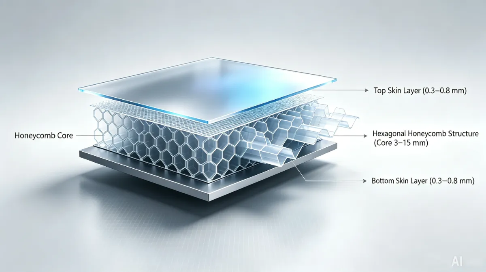

<!DOCTYPE html>
<html lang="en">
<head>
    <meta charset="UTF-8">
    <meta name="viewport" content="width=device-width, initial-scale=1.0">
    <title>PP Honeycomb Board Production Line: Complete Guide to Automated Extrusion Forming & Automotive Interior Applications - PP Honeycomb Board Production Line | Automated Extrusion Forming Equipment - smartmanu.net</title>
  <meta name="keywords" content="Can the honeycomb cell size be adjusted? Yes. The honeycomb cell size (inscribed circle diameter of the hexagonal cell) is typically adjustable within the 3-10mm range by replacing the vacuum forming mold. Smaller cells produce higher honeycomb density, greater panel rigidity, and compressive strength, but with increased weight. Larger cells provide better lightweighting effect but with reduced strength. Automotive interior applications typically select 4-6mm cell size to balance strength and weight. What is the typical return on investment period for a production line? Using a standard model production line as an example: Equipment Investment: 150,000-250,000 USD Annual Capacity: Approximately 2 million square meters (based on 8 hours/day, 250 days/year) Product Selling Price: 2-4 USD/square meter (depending on lamination process and specifications) Annual Output Value: 4-8 million USD Net Profit Margin: 15-25% Investment Payback Period: Typically 1.5-3 years, depending on market development and capacity utilization What are the facility requirements for the equipment? Ceiling Height: ≥5 meters (for equipment installation and maintenance) Building Length: ≥40 meters (production line layout + raw material and finished goods staging) Floor Load Capacity: ≥5 tons/square meter Power Supply: 380V three-phase five-wire system with dedicated transformer Cooling Water: Circulating cooling system, flow rate ≥50 m³/h, temperature ≤25°C Compressed Air: 0.6-0.8 MPa, flow rate ≥1 m³/min How is the flame retardancy of honeycomb board ensured? PP material is inherently flammable, but flame retardancy can be achieved through: Adding Flame Retardants: Incorporating magnesium hydroxide or aluminum hydroxide (halogen-free, environmentally friendly) or brominated flame retardants (high efficiency but non-environmental) into raw materials to achieve UL94 V-0 or GB 8624 B1 rating Laminating Flame-Retardant Fabric: Face layers bonded with flame-retardant nonwoven fabric or glass fiber mat Coating with Flame-Retardant Coating: Surface spraying with intumescent fire-retardant paint Automotive interior applications typically require compliance with FMVSS 302 or GB 8410 flammability standards.">
  <meta name="description" content="The PP honeycomb board production line, with its full-line PLC automatic control, extrusion one-step forming advanced process, and lightweight, high-rigidity, environmentally recyclable product characteristics, has become the preferred solution for material upgrading in automotive interiors, cold chain logistics, and environmental purification industries. From raw material batching to automatic stacking, the full-process intelligent control not only ensures product quality stability but also provides enterprises with solid technical support for cost reduction, efficiency improvement, and green manufacturing.
For enterprises planning to enter the honeycomb board production field or upgrade existing capacity, selecting equipment suppliers with mature technology, high automation levels, and comprehensive after-sales service is the key to ensuring investment success.">
<script type="application/ld+json">
{
  "@context": "https://schema.org",
  "@type": "Article",
  "headline": "PP Honeycomb Board Production Line: Complete Guide to Automated Extrusion Forming & Automotive Interior Applications",
  "description": "The PP honeycomb board production line, with its full-line PLC automatic control, extrusion one-step forming advanced process, and lightweight, high-rigidity, environmentally recyclable product charac",
  "image": "https://www.smartmanu.net/images/cover-1784885710857.webp",
  "datePublished": "2026-07-24T08:00:00+08:00",
  "dateModified": "2026-07-24T08:00:00+08:00",
  "author": {
    "@type": "Organization",
    "name": "Warren Wu",
    "url": "https://www.smartmanu.net"
  },
  "publisher": {
    "@type": "Organization",
    "name": "smartmanu.net",
    "url": "https://www.smartmanu.net"
  },
  "url": "https://www.smartmanu.net/articles/2026-07-24-pp-honeycomb-board-production-line-complete-guide-to-automated-extrusion-forming-automotive-interior-applications.html"
}
<' + 'script>    <meta name="author" content="Warren Wu">
    <meta name="category" content="General Machinery">
    <meta name="date" content="2026-07-24">
    <link rel="preload" href="../css/styles.css" as="style">
    <link rel="stylesheet" href="../css/styles.css" media="screen">
</head>
<body class="article-page" data-article-id="1784886176037">
    <header>
        <div class="container">
            <a href="../index.html" class="logo">smartmanu.net</a>
            <div class="hamburger-menu" onclick="toggleMenu()">
                <span></span>
                <span></span>
                <span></span>
            </div>
            <nav>
                <ul class="nav-links" id="navLinks">
                    <li><a href="../index.html" onclick="toggleMenu()">Home</a></li>
                    <li><a href="../categories/general-machinery.html" onclick="toggleMenu()">General Machinery</a></li>
                    <li><a href="../categories/construction-machinery.html" onclick="toggleMenu()">Construction Machinery</a></li>
                    <li><a href="../categories/cleaning-ventilation.html" onclick="toggleMenu()">Cleaning & Ventilation</a></li>
                    <li><a href="../categories/machine-tools.html" onclick="toggleMenu()">Machine Tools</a></li>
                    <li><a href="../categories/logistics-equipment.html" onclick="toggleMenu()">Logistics Equipment</a></li>
                    <li><a href="../categories/food-machinery.html" onclick="toggleMenu()">Food Machinery</a></li>
                    <li><a href="../categories/other-machinery.html" onclick="toggleMenu()">Other Machinery</a></li>
                    <li><a href="../categories/hardware-parts.html" onclick="toggleMenu()">Hardware Parts</a></li>
                </ul>
            </nav>
        </div>
    </header>

    <main class="container">
        <div class="breadcrumb">
            <a href="../index.html">Home</a> > <a href="../categories/general-machinery.html">General Machinery</a> > PP Honeycomb Board Production Line: Complete Guide to Automated Extrusion Forming & Automotive Interior Applications
        </div>

        <article class="article-detail">
            <h1>PP Honeycomb Board Production Line: Complete Guide to Automated Extrusion Forming & Automotive Interior Applications</h1>
            <div class="meta">
                <span>Author: Warren Wu</span> | <span>Category: General Machinery</span> | <span>Published: 2026-07-24</span>
            </div>
            
            
            <div class="content">
            <h2><span >What Is a Honeycomb Board Production Line?</span></h2><p><span >A </span><strong >honeycomb board production line</strong><span > — also referred to as a </span><strong >PP honeycomb panel extrusion machine</strong><span >, </span><strong >plastic honeycomb board manufacturing equipment</strong><span >, or </span><strong >three-layer sandwich panel forming system</strong><span > — is an integrated, fully automated industrial production system specifically designed to manufacture three-layer sandwich structure panels using polypropylene (PP) as the primary raw material.</span></p><p><span >This equipment employs an </span><strong >extrusion one-step forming process</strong><span > to simultaneously extrude and bond two thin wall face layers with a central honeycomb core layer, creating composite panels with high strength-to-weight ratio characteristics. Modern honeycomb board production lines are universally equipped with </span><strong >full-line PLC automatic control systems</strong><span >, ensuring stable production output, precise process control at every stage, and effective elimination of quality variations caused by manual operation errors.</span></p><p><span >The equipment serves as the core manufacturing asset for industries pursuing material lightweighting and environmental sustainability upgrades, including automotive interiors, logistics packaging, and building decoration sectors.</span></p><h2><span >PP Honeycomb Board Structure &amp; Performance Advantages</span></h2><h3><span >Three-Layer Sandwich Structure</span></h3><p></p><table><tbody><tr><td><span >Structural Layer</span></td><td><span >Material Composition</span></td><td><span >Functional Role</span></td></tr><tr><td><strong >Upper Face Layer</strong></td><td><span >PP resin + reinforcing filler</span></td><td><span >Provides surface flatness, abrasion resistance, and aesthetic quality</span></td></tr><tr><td><strong >Honeycomb Core</strong></td><td><span >PP resin extruded hexagonal cells</span></td><td><span >Bears primary structural load; enables lightweight construction</span></td></tr><tr><td><strong >Lower Face Layer</strong></td><td><span >PP resin + reinforcing filler</span></td><td><span >Provides bottom protection and bonding base for lamination</span></td></tr></tbody></table><h3><span >Core Performance Advantages</span></h3><table><tbody><tr><td><span >Performance Indicator</span></td><td><span >Technical Characteristics</span></td><td><span >Application Value</span></td></tr><tr><td><strong >Lightweight</strong></td><td><span >Density 0.6-0.9 g/cm³, only 30-40% of solid panels</span></td><td><span >Reduces vehicle weight; improves fuel economy</span></td></tr><tr><td><strong >High Rigidity</strong></td><td><span >Honeycomb structure delivers excellent compressive and flexural properties</span></td><td><span >Thin-wall design meets structural strength requirements</span></td></tr><tr><td><strong >Eco-Friendly Shock Absorption</strong></td><td><span >PP material 100% recyclable; honeycomb structure absorbs impact energy</span></td><td><span >Meets automotive interior environmental standards; enhances safety</span></td></tr><tr><td><strong >Cold Resistance</strong></td><td><span >Maintains toughness without embrittlement at -40°C</span></td><td><span >Adapts to extreme cold climate vehicle applications</span></td></tr><tr><td><strong >Sound &amp; Thermal Insulation</strong></td><td><span >Honeycomb cavities block sound wave and heat conduction</span></td><td><span >Reduces cabin noise; improves HVAC efficiency</span></td></tr><tr><td><strong >Moisture &amp; Heat Resistance</strong></td><td><span >PP material inherently hydrophobic; honeycomb blocks moisture</span></td><td><span >Prevents mold growth; extends service life</span></td></tr></tbody></table><h2><span >Core Manufacturing Process Overview</span></h2><p><span >PP honeycomb board production follows a </span><strong >five-stage continuous extrusion forming process</strong><span >:</span></p><table><tbody><tr><td><span >Stage</span></td><td><span >Process Step</span></td><td><span >Core Function</span></td></tr><tr><td><strong >1</strong></td><td><span >Raw Material Batching &amp; Automatic Feeding</span></td><td><span >Precise metering of PP resin, fillers, and additives with uniform blending</span></td></tr><tr><td><strong >2</strong></td><td><span >Extrusion Forming</span></td><td><span >Three-layer melt co-extrusion to create sandwich structure</span></td></tr><tr><td><strong >3</strong></td><td><span >Honeycomb Structure Forming &amp; Cooling Calibration</span></td><td><span >Vacuum forming of hexagonal cells; dimensional stabilization</span></td></tr><tr><td><strong >4</strong></td><td><span >In-Line Lamination / Film Coating</span></td><td><span >Face layer composite bonding with nonwoven fabric, glass fiber, or functional films</span></td></tr><tr><td><strong >5</strong></td><td><span >Haul-Off, Cutting &amp; Automatic Stacking</span></td><td><span >Fixed-length cutting, automatic stacking or roll winding</span></td></tr></tbody></table><h2><span >Stage 1: Raw Material Batching &amp; Automatic Feeding</span></h2><p><span >The production cycle begins with ensuring precise and consistent raw material formulation:</span></p><ol><li><strong >Base Material Preparation</strong><span >: High-flow PP resin (Melt Flow Index: 10-30 g/10min) is used as the primary substrate, ensuring the melt possesses excellent flowability and formability during the extrusion process.</span></li><li><strong >Additive Incorporation</strong><span >:</span></li><li class="ql-indent-1"><strong >Calcium Carbonate Filler</strong><span > (10-30%): Reduces cost; improves rigidity and dimensional stability</span></li><li class="ql-indent-1"><strong >Talc or Glass Fiber</strong><span > (5-15%): Enhances mechanical properties and heat resistance</span></li><li class="ql-indent-1"><strong >Antioxidants &amp; UV Stabilizers</strong><span > (0.5-2%): Prevents thermal-oxidative degradation during processing and long-term use</span></li><li class="ql-indent-1"><strong >Lubricants</strong><span > (Stearic Acid, Paraffin Wax) (0.5-2%): Reduces friction within the extruder</span></li><li class="ql-indent-1"><strong >Color Masterbatch</strong><span > (2-5%): Formulated according to customer color requirements</span></li><li><strong >Automatic Metering System</strong><span >: Each component is precisely metered through </span><strong >loss-in-weight feeders</strong><span > with metering accuracy of ±0.5%, ensuring consistent batch-to-batch product formulation.</span></li><li><strong >Pre-Mixing &amp; Drying</strong><span >: Raw materials undergo brief blending in a </span><strong >high-speed pre-mixer</strong><span > and pass through a </span><strong >hot-air drying system</strong><span > to remove moisture (controlled below 0.05%), preventing bubble generation or material degradation during extrusion.</span></li></ol><blockquote><strong >Quality Control Point</strong><span >: The stability of raw material formulation directly determines the density, strength, and surface quality of the honeycomb board. The automatic metering system is the key to achieving batch consistency.</span></blockquote><h2><span >Stage 2: Extrusion Forming Process</span></h2><p><span >Extrusion forming represents the core manufacturing stage, utilizing </span><strong >three-layer co-extrusion technology</strong><span >:</span></p><h3><span >Main Extruder (Face Layer Extrusion)</span></h3><ol><li><span >Equipped with a </span><strong >large L/D ratio single-screw extruder</strong><span > (L/D ≥ 33:1)</span></li><li><span >Screw features </span><strong >barrier or separation-type design</strong><span > ensuring uniform melt plasticization</span></li><li><span >Heating zone control: Feed section 160°C → Plasticizing section 180°C → Homogenizing section 200°C → Die section 210°C</span></li><li><span >Two main extruders supply upper and lower face layer melts respectively</span></li></ol><h3><span >Auxiliary Extruder (Core Layer Extrusion)</span></h3><ol><li><span >Dedicated </span><strong >vented single-screw extruder</strong><span > for processing high-fill PP core material</span></li><li><span >Equipped with </span><strong >vacuum venting port</strong><span > to remove volatiles and moisture</span></li><li><span >Core layer melt temperature controlled at 200-220°C, ensuring adequate flowability for honeycomb mold filling</span></li></ol><h3><span >Three-Layer Co-Extrusion Die</span></h3><ol><li><strong >Coat-hanger flow channel distribution die</strong><span > ensures uniform melt distribution across the die width</span></li><li><strong >Composite distributor</strong><span > precisely layers face and core melts in the correct proportions</span></li><li><span >Standard die width: 1000-2000mm, customizable per customer requirements</span></li><li><span >Die lip gap precision adjustable (0.01mm accuracy), controlling face layer thickness</span></li></ol><blockquote><strong >Process Core</strong><span >: The three-layer melts complete layered composite bonding within the die, though the honeycomb structure has not yet formed — at this stage, the material exists as a continuous flat three-layer melt blank.</span></blockquote><h2><span >Stage 3: Honeycomb Structure Forming &amp; Cooling Calibration</span></h2><p><span >Honeycomb structure formation represents the most technically sophisticated aspect of this process:</span></p><h3><span >Vacuum Thermoforming</span></h3><ol><li><span >Immediately upon exiting the die, the melt blank enters the </span><strong >vacuum forming unit</strong></li><li><span >The unit is equipped with </span><strong >upper and lower vacuum chambers</strong><span >, each containing </span><strong >honeycomb-shaped forming molds</strong><span > (typically stainless steel with polished surfaces)</span></li><li><span >Vacuum pumps generate </span><strong >negative pressure of 0.06-0.09 MPa</strong><span >, drawing the semi-molten core material into the hexagonal mold cavities</span></li><li><span >The core material expands under vacuum suction, forming regular </span><strong >hexagonal cell cavities</strong></li></ol><h3><span >Face Layer Bonding</span></h3><ol><li><span >Simultaneously with vacuum forming, the upper and lower face layer melts bond with the core material under pressure</span></li><li><span >Face layers remain flat while only the core layer forms honeycomb cells, ultimately creating a </span><strong >"flat-honeycomb-flat"</strong><span > three-layer sandwich structure</span></li></ol><h3><span >Cooling Calibration</span></h3><ol><li><span >The formed honeycomb board enters a </span><strong >multi-roll cooling calibration machine</strong></li><li><span >Cooling rolls circulate </span><strong >temperature-controlled cooling water</strong><span > (progressively reduced: 40°C → 25°C → 15°C)</span></li><li><span >Cooling rate is strictly controlled to prevent warpage from uneven cooling</span></li><li><span >Calibration rolls apply appropriate pressure to ensure uniform panel thickness and flatness</span></li></ol><blockquote><strong >Technical Challenge</strong><span >: The coordinated control of vacuum level, melt temperature, and cooling rate is critical to honeycomb forming quality. Insufficient vacuum causes cell collapse; excessive vacuum may rupture face layers. Rapid cooling generates internal stresses; slow cooling reduces production efficiency.</span></blockquote><h2><span >Stage 4: In-Line Lamination / Film Coating</span></h2><p><span >To expand product functionality and application scope, the production line can integrate an </span><strong >in-line lamination unit</strong><span >:</span></p><h3><span >Double-Side Fabric Lamination</span></h3><ol><li><strong >Unwinding Stations</strong><span >: Upper and lower </span><strong >dual-position unwinding racks</strong><span > load nonwoven fabric, glass fiber mat, or needle-punched felt rolls</span></li><li><strong >Surface Activation</strong><span >: Fabric passes through </span><strong >corona treatment or flame treatment</strong><span > to increase surface energy and enhance bonding with PP</span></li><li><strong >Hot-Melt Lamination</strong><span >: The honeycomb board hot blank passes through </span><strong >lamination pressure rolls</strong><span >, with fabric bonding to the face layer in the molten state</span></li><li><strong >Cooling Solidification</strong><span >: The laminated board enters a </span><strong >secondary cooling section</strong><span > to solidify the bonding layer</span></li></ol><h3><span >Film Coating Process</span></h3><ol><li><span >Applicable functional films: Aluminum foil (thermal reflection), PE film (moisture barrier), TPO film (weather resistance)</span></li><li><span >Applied via </span><strong >hot-press lamination</strong><span > or </span><strong >extrusion coating</strong><span >, with film thickness 0.02-0.1mm</span></li></ol><blockquote><strong >Lamination Advantage</strong><span >: In-line lamination eliminates secondary processing steps, reduces production costs, and ensures strong bonding between the composite layer and substrate (peel strength ≥2 N/cm).</span></blockquote><h2><span >Stage 5: Haul-Off, Cutting &amp; Automatic Stacking</span></h2><p><span >The finished product handling stage achieves automation and precision:</span></p><h3><span >Haul-Off Conveyance</span></h3><ol><li><strong >Rubber pressure roll haul-off</strong><span > pulls the board at constant speed</span></li><li><span >Haul-off speed precisely synchronized with extrusion speed (line speed adjustable 0.5-3 m/min)</span></li><li><span >Tension sensors provide real-time monitoring to prevent stretching deformation</span></li></ol><h3><span >In-Line Thickness Measurement</span></h3><ol><li><strong >Laser thickness gauge</strong><span > or </span><strong >X-ray thickness gauge</strong><span > performs real-time scanning of board thickness</span></li><li><span >Data feeds back to the PLC for automatic adjustment of die gap and haul-off speed</span></li></ol><h3><span >Fixed-Length Cutting</span></h3><ol><li><strong >Servo flying saw</strong><span > or </span><strong >CNC shearing machine</strong><span > automatically cuts according to preset length</span></li><li><span >Cutting length accuracy ±1mm, with clean, burr-free edges</span></li><li><span >Produces fixed-length panels (common specification: 1220×2440mm) or continuous rolls</span></li></ol><h3><span >Automatic Stacking / Winding</span></h3><ol><li><span >Fixed-length panels are neatly stacked by an </span><strong >automatic stacker</strong><span > (10-50 panels per stack)</span></li><li><span >Rolls are wound by an </span><strong >automatic winder</strong><span > (maximum roll diameter 1200mm)</span></li><li><span >Finished products are automatically bagged or stretch-wrapped for warehouse storage</span></li></ol><h2><span >Full-Line PLC Intelligent Control System</span></h2><p><span >The core competitive advantage of modern honeycomb board production lines lies in </span><strong >full-line PLC automatic control</strong><span >:</span></p><h3><span >System Architecture</span></h3><table><tbody><tr><td><span >Control Level</span></td><td><span >Functional Module</span></td><td><span >Technical Characteristics</span></td></tr><tr><td><strong >Field Level</strong></td><td><span >Temperature sensors, pressure sensors, encoders, limit switches</span></td><td><span >High-precision data acquisition, response time &lt;10ms</span></td></tr><tr><td><strong >Control Level</strong></td><td><span >PLC master unit (Siemens S7-1500 or Mitsubishi FX5U)</span></td><td><span >Modular design; supports remote diagnostics</span></td></tr><tr><td><strong >Execution Level</strong></td><td><span >Frequency converters, servo drives, temperature modules, pneumatic valves</span></td><td><span >PID closed-loop control; steady-state error &lt;0.5%</span></td></tr><tr><td><strong >Monitoring Level</strong></td><td><span >Touchscreen HMI, industrial PC, MES interface</span></td><td><span >Visual operation; supports data traceability</span></td></tr></tbody></table><h3><span >Core Control Functions</span></h3><ol><li><strong >Temperature Closed-Loop Control</strong></li><li class="ql-indent-1"><span >Independent PID regulation of each extruder heating zone, die, and lamination roll temperature</span></li><li class="ql-indent-1"><span >Temperature control accuracy ±1°C, preventing material overheating degradation or inadequate plasticization</span></li><li><strong >Speed Synchronization Control</strong></li><li class="ql-indent-1"><span >Extruder screw speed, haul-off speed, and cutting speed precisely synchronized through </span><strong >electronic gear ratio</strong></li><li class="ql-indent-1"><span >Speed fluctuation &lt;0.5%, ensuring uniform wall thickness</span></li><li><strong >Vacuum Level Automatic Control</strong></li><li class="ql-indent-1"><span >Vacuum pump variable frequency speed regulation, automatically adjusting vacuum level according to panel specifications</span></li><li class="ql-indent-1"><span >Vacuum fluctuation &lt;0.005 MPa, ensuring honeycomb structure consistency</span></li><li><strong >Fault Self-Diagnosis</strong></li><li class="ql-indent-1"><span >Real-time monitoring of motor current, temperature, and pressure anomalies</span></li><li class="ql-indent-1"><span >Automatic alarm and shutdown when limits are exceeded, protecting equipment safety</span></li><li class="ql-indent-1"><span >Historical fault recording for maintenance analysis</span></li><li><strong >Recipe Management</strong></li><li class="ql-indent-1"><span >Stores 50+ process recipes, enabling one-click switching between product specifications</span></li><li class="ql-indent-1"><span >Recipe encryption protection prevents operational errors</span></li></ol><blockquote><strong >Intelligent Value</strong><span >: Full-line PLC automatic control reduces human operational errors by over 90%, improves product pass rates to above 98%, and enables 24-hour continuous production with 40-60% capacity improvement.</span></blockquote><h2><span >Primary Application Fields of PP Honeycomb Board</span></h2><h3><span >Automotive Interior Sector (Core Application)</span></h3><table><tbody><tr><td><span >Application Position</span></td><td><span >Functional Requirements</span></td><td><span >Honeycomb Board Advantages</span></td></tr><tr><td><strong >Trunk Load Floor</strong></td><td><span >Load-bearing, flatness, lightweight</span></td><td><span >High rigidity support; 50% lighter than MDF</span></td></tr><tr><td><strong >Trunk Divider Panel</strong></td><td><span >Space separation, removable</span></td><td><span >Easy to process and form; edges can be wrapped</span></td></tr><tr><td><strong >Trunk Carpet Substrate</strong></td><td><span >Carpet support, sound &amp; vibration damping</span></td><td><span >Honeycomb cavities absorb vibration and noise</span></td></tr><tr><td><strong >Side Wall Trim Panel</strong></td><td><span >Curved surface fit, aesthetic quality</span></td><td><span >Thermoformable to complex curves</span></td></tr><tr><td><strong >Headliner Panel</strong></td><td><span >Large-area flatness, thermal &amp; sound insulation</span></td><td><span >Lightweight reduces roof center of gravity</span></td></tr><tr><td><strong >Seat Back Panel</strong></td><td><span >Strength, safety</span></td><td><span >High impact resistance; meets crash standards</span></td></tr></tbody></table><h3><span >Environmental Purification Sector</span></h3><ol><li><strong >Air Purifier Filter Frames</strong><span >: Honeycomb structure serves as air channel support with low airflow resistance and high strength</span></li><li><strong >Wastewater Treatment Equipment Media</strong><span >: PP material corrosion-resistant; honeycomb structure provides large specific surface area for biofilm attachment</span></li></ol><h3><span >Cold Chain Logistics Sector</span></h3><ol><li><strong >Cold Storage Ventilation Ducts</strong><span >: Honeycomb board ducts distribute air uniformly; PP material remains tough at low temperatures without embrittlement</span></li><li><strong >Insulated Truck Interior Lining</strong><span >: Honeycomb cavities filled with insulation material improve thermal performance</span></li></ol><h3><span >Furniture &amp; Decoration Sector</span></h3><ol><li><strong >Furniture Filling Material</strong><span >: Replaces traditional particleboard; formaldehyde-free; moisture and mold resistant</span></li><li><strong >Display Racks, Partition Panels</strong><span >: Lightweight and high-strength; easy to cut and process; surface can be laminated with decorative film</span></li></ol><h2><span >Equipment Technical Parameters &amp; Selection Guide</span></h2><table><tbody><tr><td><span >Parameter</span></td><td><span >Standard Model</span></td><td><span >Wide-Format Model</span></td><td><span >High-Speed Model</span></td></tr><tr><td><strong >Product Width</strong></td><td><span >1000-1200mm</span></td><td><span >1500-2000mm</span></td><td><span >1000-1500mm</span></td></tr><tr><td><strong >Product Thickness</strong></td><td><span >3-10mm</span></td><td><span >5-15mm</span></td><td><span >3-8mm</span></td></tr><tr><td><strong >Honeycomb Core Thickness</strong></td><td><span >3-8mm</span></td><td><span >5-12mm</span></td><td><span >3-6mm</span></td></tr><tr><td><strong >Face Layer Thickness</strong></td><td><span >0.3-0.8mm</span></td><td><span >0.5-1.0mm</span></td><td><span >0.3-0.6mm</span></td></tr><tr><td><strong >Max Extrusion Output</strong></td><td><span >250-350 kg/h</span></td><td><span >400-600 kg/h</span></td><td><span >500-700 kg/h</span></td></tr><tr><td><strong >Line Speed</strong></td><td><span >0.5-2 m/min</span></td><td><span >0.3-1.5 m/min</span></td><td><span >1.5-3 m/min</span></td></tr><tr><td><strong >Installed Power</strong></td><td><span >180-250 kW</span></td><td><span >280-400 kW</span></td><td><span >350-500 kW</span></td></tr><tr><td><strong >Dimensions (L×W×H)</strong></td><td><span >25×4×3.5m</span></td><td><span >35×5×4m</span></td><td><span >30×4.5×3.8m</span></td></tr><tr><td><strong >Applicable Materials</strong></td><td><span >PP, PP+filler</span></td><td><span >PP, PP+glass fiber</span></td><td><span >Virgin PP, high-flow PP</span></td></tr></tbody></table><h3><span >Selection Recommendations</span></h3><ol><li><strong >Automotive Interior Suppliers</strong><span >: Recommended </span><strong >Standard or Wide-Format models</strong><span >, emphasizing product flatness and lamination functionality</span></li><li><strong >Logistics Packaging Enterprises</strong><span >: Recommended </span><strong >High-Speed models</strong><span >, pursuing high capacity and low unit consumption</span></li><li><strong >Export-Oriented Enterprises</strong><span >: Select models equipped with </span><strong >ASA/PMMA in-line coating units</strong><span > to enhance product added value</span></li></ol><h2><span >Frequently Asked Questions</span></h2><h3><span >What advantages does PP honeycomb board offer compared to corrugated cardboard and hollow board?</span></h3><table><tbody><tr><td><span >Comparison Item</span></td><td><span >PP Honeycomb Board</span></td><td><span >Corrugated Cardboard</span></td><td><span >PP Hollow Board</span></td></tr><tr><td><strong >Water Resistance</strong></td><td><span >Excellent (completely waterproof)</span></td><td><span >Poor (easily absorbs moisture and softens)</span></td><td><span >Good</span></td></tr><tr><td><strong >Strength</strong></td><td><span >High (honeycomb structure)</span></td><td><span >Low</span></td><td><span >Moderate</span></td></tr><tr><td><strong >Durability</strong></td><td><span >Reusable 100+ times</span></td><td><span >Single-use</span></td><td><span >Reusable 20-50 times</span></td></tr><tr><td><strong >Eco-Friendliness</strong></td><td><span >Recyclable and regenerable</span></td><td><span >Recyclable but easily contaminated</span></td><td><span >Recyclable</span></td></tr><tr><td><strong >Cost</strong></td><td><span >Higher</span></td><td><span >Lowest</span></td><td><span >Moderate</span></td></tr><tr><td><strong >Applicable Scenarios</strong></td><td><span >Automotive, cold chain, long-term circulation</span></td><td><span >Short-term packaging, one-time transport</span></td><td><span >General circulation boxes</span></td></tr></tbody></table><h3><span >Can the honeycomb cell size be adjusted?</span></h3><p><span >Yes. The honeycomb cell size (inscribed circle diameter of the hexagonal cell) is typically adjustable within the </span><strong >3-10mm</strong><span > range by replacing the </span><strong >vacuum forming mold</strong><span >. Smaller cells produce higher honeycomb density, greater panel rigidity, and compressive strength, but with increased weight. Larger cells provide better lightweighting effect but with reduced strength. Automotive interior applications typically select </span><strong >4-6mm cell size</strong><span > to balance strength and weight.</span></p><h3><span >What is the typical return on investment period for a production line?</span></h3><p><span >Using a standard model production line as an example:</span></p><ol><li><strong >Equipment Investment</strong><span >: 150,000-250,000 USD</span></li><li><strong >Annual Capacity</strong><span >: Approximately 2 million square meters (based on 8 hours/day, 250 days/year)</span></li><li><strong >Product Selling Price</strong><span >: 2-4 USD/square meter (depending on lamination process and specifications)</span></li><li><strong >Annual Output Value</strong><span >: 4-8 million USD</span></li><li><strong >Net Profit Margin</strong><span >: 15-25%</span></li><li><strong >Investment Payback Period</strong><span >: Typically </span><strong >1.5-3 years</strong><span >, depending on market development and capacity utilization</span></li></ol><h3><span >What are the facility requirements for the equipment?</span></h3><ol><li><strong >Ceiling Height</strong><span >: ≥5 meters (for equipment installation and maintenance)</span></li><li><strong >Building Length</strong><span >: ≥40 meters (production line layout + raw material and finished goods staging)</span></li><li><strong >Floor Load Capacity</strong><span >: ≥5 tons/square meter</span></li><li><strong >Power Supply</strong><span >: 380V three-phase five-wire system with dedicated transformer</span></li><li><strong >Cooling Water</strong><span >: Circulating cooling system, flow rate ≥50 m³/h, temperature ≤25°C</span></li><li><strong >Compressed Air</strong><span >: 0.6-0.8 MPa, flow rate ≥1 m³/min</span></li></ol><h3><span >How is the flame retardancy of honeycomb board ensured?</span></h3><p><span >PP material is inherently flammable, but flame retardancy can be achieved through:</span></p><ol><li><strong >Adding Flame Retardants</strong><span >: Incorporating </span><strong >magnesium hydroxide or aluminum hydroxide</strong><span > (halogen-free, environmentally friendly) or </span><strong >brominated flame retardants</strong><span > (high efficiency but non-environmental) into raw materials to achieve </span><strong >UL94 V-0</strong><span > or </span><strong >GB 8624 B1</strong><span > rating</span></li><li><strong >Laminating Flame-Retardant Fabric</strong><span >: Face layers bonded with flame-retardant nonwoven fabric or glass fiber mat</span></li><li><strong >Coating with Flame-Retardant Coating</strong><span >: Surface spraying with intumescent fire-retardant paint</span></li></ol><p><span >Automotive interior applications typically require compliance with </span><strong >FMVSS 302</strong><span > or </span><strong >GB 8410</strong><span > flammability standards.</span></p><h3><br></h3>
            </div>
        </article>

        <section class="related-articles" id="relatedArticles">
            <h2>Related Articles</h2>
            <div class="related-articles-list" id="relatedArticlesList"></div>
        </section>
    </main>

    <footer>
        <div class="footer-content">
            <div class="footer-section">
                <a href="../index.html" class="footer-logo">smartmanu.net</a>
                <p>Your trusted source for professional machinery information, technical articles, and industry insights. We provide comprehensive resources for machinery professionals worldwide.</p>
                <div class="social-links">
                    <a href="#" aria-label="TikTok"><svg width="20" height="20" viewBox="0 0 24 24" fill="currentColor"><path d="M12 2C6.477 2 2 6.477 2 12c0 4.991 3.657 9.128 8.438 9.878v-6.987h-2.54V12h2.54V9.797c0-2.506 1.492-3.89 3.777-3.89 1.094 0 2.238.195 2.238.195v2.46h-1.26c-1.243 0-1.63.771-1.63 1.562V12h2.773l-.443 2.89h-2.33v6.988C18.343 21.128 22 16.991 22 12c0-5.523-4.477-10-10-10z"/></svg></a>
                    <a href="#" aria-label="Instagram"><svg width="20" height="20" viewBox="0 0 24 24" fill="currentColor"><path d="M12 2.163c3.204 0 3.584.012 4.85.07 3.252.148 4.771 1.691 4.919 4.919.058 1.265.069 1.645.069 4.849 0 3.205-.012 3.584-.069 4.849-.149 3.225-1.664 4.771-4.919 4.919-1.266.058-1.644.07-4.85.07-3.204 0-3.584-.012-4.849-.07-3.26-.149-4.771-1.699-4.919-4.92-.058-1.265-.07-1.644-.07-4.849 0-3.204.013-3.583.07-4.849.149-3.227 1.664-4.771 4.919-4.919 1.266-.057 1.645-.069 4.849-.069zm0-2.163c-3.259 0-3.667.014-4.947.072-4.358.2-6.78 2.618-6.98 6.98-.059 1.281-.073 1.689-.073 4.948 0 3.259.014 3.668.072 4.948.2 4.358 2.618 6.78 6.98 6.98 1.281.058 1.689.072 4.948.072 3.259 0 3.668-.014 4.948-.072 4.354-.2 6.782-2.618 6.979-6.98.059-1.28.073-1.689.073-4.948 0-3.259-.014-3.667-.072-4.947-.196-4.354-2.617-6.78-6.979-6.98-1.281-.059-1.69-.073-4.949-.073zm0 5.838c-3.403 0-6.162 2.759-6.162 6.162s2.759 6.163 6.162 6.163 6.162-2.759 6.162-6.163c0-3.403-2.759-6.162-6.162-6.162zm0 10.162c-2.209 0-4-1.79-4-4 0-2.209 1.791-4 4-4s4 1.791 4 4c0 2.21-1.791 4-4 4zm6.406-11.845c-.796 0-1.441.645-1.441 1.44s.645 1.44 1.441 1.44c.795 0 1.439-.645 1.439-1.44s-.644-1.44-1.439-1.44z"/></svg></a>
                    <a href="#" aria-label="Facebook"><svg width="20" height="20" viewBox="0 0 24 24" fill="currentColor"><path d="M18.244 2.25h3.308l-7.227 8.26 8.502 11.24H16.17l-5.214-6.817L4.99 21.75H1.68l7.73-8.835L1.254 2.25H8.08l4.713 6.231zm-1.161 17.52h1.833L7.084 4.126H5.117z"/></svg></a>
                    <a href="#" aria-label="YouTube"><svg width="20" height="20" viewBox="0 0 24 24" fill="currentColor"><path d="M23.498 6.186a3.016 3.016 0 0 0-2.122-2.136C19.505 3.545 12 3.545 12 3.545s-7.505 0-9.377.505A3.017 3.017 0 0 0 .502 6.186C0 8.07 0 12 0 12s0 3.93.502 5.814a3.016 3.016 0 0 0 2.122 2.136c1.871.505 9.376.505 9.376.505s7.505 0 9.377-.505a3.015 3.015 0 0 0 2.122-2.136C24 15.93 24 12 24 12s0-3.93-.502-5.814zM9.545 15.568V8.432L15.818 12l-6.273 3.568z"/></svg></a>
                </div>
            </div>

            <div class="footer-section">
                <h3>Categories</h3>
                <ul>
                    <li><a href="../categories/general-machinery.html">General Machinery</a></li>
                    <li><a href="../categories/construction-machinery.html">Construction Machinery</a></li>
                    <li><a href="../categories/cleaning-ventilation.html">Cleaning & Ventilation</a></li>
                    <li><a href="../categories/machine-tools.html">Machine Tools</a></li>
                    <li><a href="../categories/logistics-equipment.html">Logistics Equipment</a></li>
                    <li><a href="../categories/food-machinery.html">Food Machinery</a></li>
                    <li><a href="../categories/other-machinery.html">Other Machinery</a></li>
                    <li><a href="../categories/hardware-parts.html">Hardware Parts</a></li>
                </ul>
            </div>

            <div class="footer-section">
                <h3>Legal</h3>
                <ul>
                    <li><a href="../privacy-policy.html">Privacy Policy</a></li>
                    <li><a href="../terms-of-service.html">Terms of Service</a></li>
                    <li><a href="../dmca.html">DMCA & Copyright</a></li>
                    <li><a href="../community-guidelines.html">Community Guidelines</a></li>
                </ul>
            </div>

            <div class="footer-section footer-newsletter">
                <div class="newsletter-content">
                    <div class="newsletter-text">
                        <h3>Newsletter</h3>
                        <p>Subscribe to our newsletter for the latest machinery news and technical updates.</p>
                    </div>
                    <form class="newsletter-form" action="#" method="post">
                        <input type="email" placeholder="Enter your email" required>
                        <button type="submit">Subscribe</button>
                    </form>
                    <div class="contact-info">
                    <span>Submission Email: <a href="mailto:NB914Y@163.com">NB914Y@163.com</a></span>
                    </div>
                </div>
            </div>
        </div>

        <div class="footer-bottom">
            <p>&copy; 2026 smartmanu.net. All rights reserved.</p>
            <div class="footer-bottom-links">
                <a href="../privacy-policy.html">Privacy Policy</a>
                <a href="../terms-of-service.html">Terms of Service</a>
                <a href="../cookie-policy.html">Cookie Policy</a>
                <a href="#" onclick="showCookieSettings(); return false;">Cookie Settings</a>
                <a href="../privacy-policy.html#dsar">Do Not Sell or Share</a>
                <a href="../dmca.html">DMCA</a>
                <a href="../community-guidelines.html">Community Guidelines</a>
                <a href="#sitemap">Sitemap</a>
            </div>
        </div>
    </footer>

    <script src="../js/main.js"></script>
</body>
</html>
